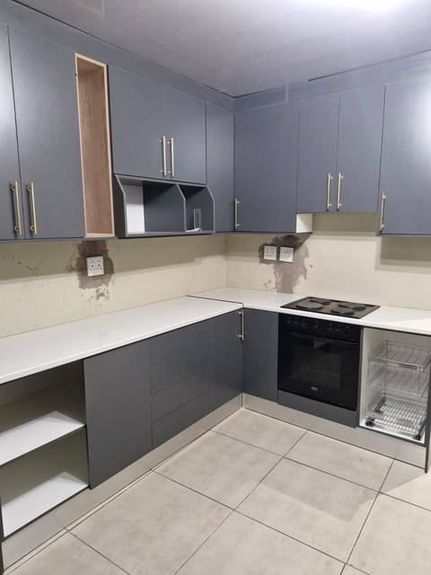

Renovation & woodworks in Newlands
Newlands is leafy and green, which also means wet winters. Family homes here need kitchens, cupboards and outdoor timber that handle damp. We're often asked for kitchens with moisture-resistant boards, built-in cupboards, and decks and pool decks.
Examples of our work
From our projects across Cape Town.



Working in Newlands
Newlands sits on the eastern slopes of Table Mountain, next to the forest and the sports grounds, and it is one of the wettest parts of Cape Town. Its leafy streets have family homes with big gardens, many shaded by old trees. The wet winters mean damp is a real concern: kitchen and bathroom cupboards, floors and outdoor timber need moisture-resistant materials and good ventilation. Decks under trees also need regular cleaning and sealing.
Kitchens · Built-in cupboards · Doors & garage doors · Furniture · Decks · Renovations →
Questions from Newlands
What materials work best in damp Newlands winters?
We use moisture-resistant boards, properly sealed edges and treated hardwood outside, so units and decks don't swell or rot.
What cupboards work best in a damp Newlands home?
Moisture-resistant board, sealed edges and a small gap behind units against outside walls help a lot.
Will a timber deck rot under the trees in Newlands?
Not if it's built right. Hardwood, good drainage and regular sealing keep it sound for many years.
Which decking lasts in a wet garden?
Durable hardwoods with good spacing for drainage and airflow, fixed with stainless screws and sealed regularly.